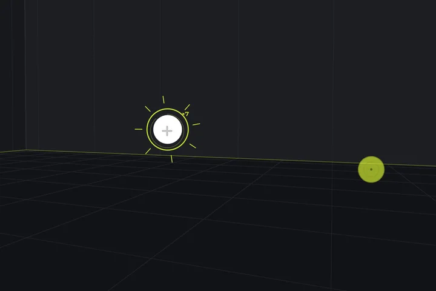
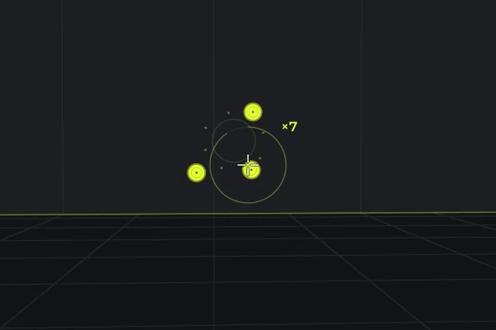
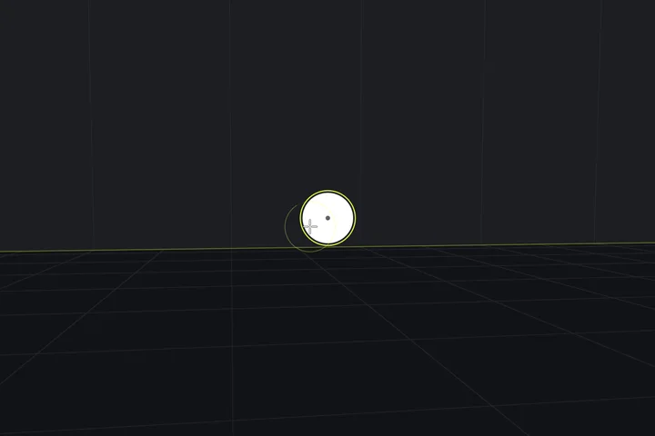
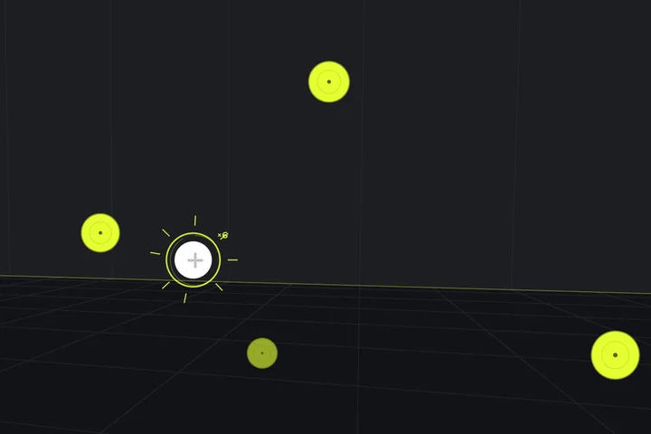
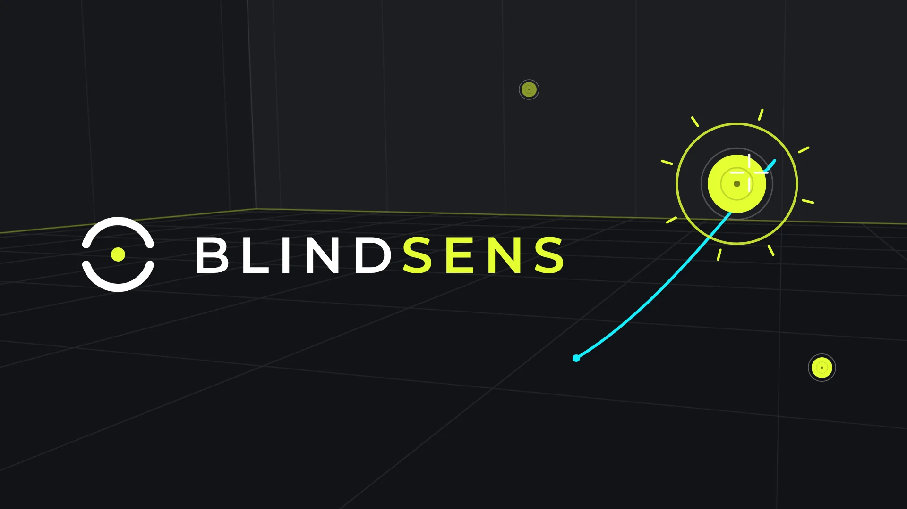

Your sens,proven blind.
A blind sensitivity test for FPS players. You aim at five hidden sensitivities in random order, and the data, not your feel, picks the winner.
After a few thousand hours, your current sens always feels right. That’s not performance. That’s habit.
Five sensitivities. You never know which one.
Short aim blocks at five steps around your own sens, from ×0.70 to ×1.42. They close, they shuffle, and you play them blind. Habit has nothing to hold on to.
- ×0.70
- ×0.84
- Your sens×1.00
- ×1.19
- ×1.42
30 blind blocks. One curve.
- 01
Play blind
Short aim blocks at five hidden sensitivities around your own, shuffled. You never know which one you’re on.
- 02
Every block, one point
Hits, time and corrections become one score per block. Thirty blocks, thirty points.
- 03
Fit the curve
One curve through every point, redrawn 400 times on resampled data to see how far the peak can move.
- 04
Only then, a number
A new sens only when the peak survives the statistics. If a change can’t be proven, it tells you.

One number. Room to round it.
You get the sens you actually aim best with, and the range where your aim stays the same. Anything inside it works.
- Game
- VALORANT, 800 DPI
- Change
- −16%
- Distance
- 48.6 cm/360°
- Proven range
- 0.311–0.353
 1
2
3
1
2
3
- 1Your new sensThe step you aimed best with, applied to your own sens.
- 2Proven rangeEvery value in it aims the same, within what the test can measure.
- 3Statistically confidentThe peak survived 400 resamples. Otherwise it would say so.
Give it three evenings
The first minutes on a new sens always feel wrong. That isn’t data, it’s re-adjustment.
Test again in a week
Every test lands in the same profile and narrows the range.
One change at a time
Change sens, DPI and FOV together, and no result can tell you which one mattered.
Carry it to 39 games.
Your result is also a distance: how far your mouse travels for one full turn. Blindsens converts it to the setting in every game it knows, so the same aim follows you everywhere.
- VALORANTSensitivity: Aim
- 0.336
- OverwatchSensitivity
- 3.56
- Marvel RivalsMouse Sensitivity
- 1.34
- Counter-Strike 2Mouse Sensitivity
- 1.07
- Apex LegendsMouse Sensitivity
- 1.07
- FortniteX-Axis and Y-Axis Sensitivity
- 4.2%
- Call of DutyMouse Sensitivity
- 3.56
- DeadlockMouse Sensitivity
- 0.53
Also Rainbow Six Siege X, THE FINALS, PUBG: BATTLEGROUNDS, Battlefield 6, Destiny 2, Escape from Tarkov, Arena Breakout: Infinite, Rust, Hunt: Showdown 1896, Halo Infinite, Halo: The Master Chief Collection, Strinova, FragPunk, Team Fortress 2, Titanfall 2, Quake Champions, Quake Live, Counter-Strike: Source, Counter-Strike 1.6, Garry’s Mod, Left 4 Dead 2, Half-Life 2, Insurgency: Sandstorm, Squad, DayZ, Cyberpunk 2077, BattleBit Remastered, Krunker, BATTALION: Legacy, Reflex Arena and Minecraft: Java Edition. Any other game works through cm/360°.
Every hero needs a different aim.
A Widowmaker flick and a Soldier: 76 track are different jobs. Pick a role, and Blindsens tests only the aim that role needs, at hidden sens. Each role gets its own number.
Example result in Overwatch, from a current sens of 4.50.





- Tests
- Heroes
Ana, Ashe, Cassidy, Emre, Freja, Hanzo, Illari, Kiriko, Sojourn, Widowmaker
Widowmaker and Ana also get a zoom sens: 37.89 at 103 FOV.
Marvel Rivals gets a sens per hero too. You can move any hero to another role, and every other game uses your all-round number.
It turns exactly like your game.
A test is only as good as its input. Blindsens reads your mouse the way your game does, and checks it before a single block counts.
- 1:1
Raw mouse input
Each game’s rotation is built in, so one count of your mouse turns the arena exactly as far as it turns your game.
- 20s
Recognition check
A short blind check confirms the arena turns like your game, and catches a wrong sens, game or typo first.
- 165
FPS on a 165 Hz screen
The arena runs in step with your monitor. Measured: 99% of frames within 6.5 ms, no stutter.
- 0
Accounts or trackers
It runs offline, with no sign-up and no analytics. Your results stay on your PC.
See the test run.
Trailer, 0:38
Play trailerNot a trainer.A test.
Blindsens doesn’t try to make you practise more. It answers one question: which sensitivity do you actually aim best with?